Turn a loose thought into a reminder you can trust.
Capture it quickly, add only the structure it needs, and keep every edit on the card.
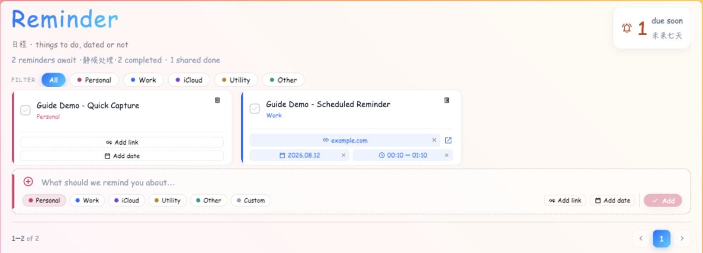
Seven actions, one calm place
Start with the sentence, not the settings.
The composer waits below the card grid. Type the thing you want to remember, then choose a category.
Create a basic reminder创建基础提醒
Available after sign-in, once loading finishes and no category or Shared filter is active.登录并完成载入后可用；分类或「共享」筛选必须处于关闭状态。
- Find the composer below the reminder cards.在提醒卡片下方找到新建输入区。
- Type the action or fact you need to remember.输入需要记住的行动或事项。
- Keep Personal or select Work, iCloud, Utility, Other, or Custom.保留「个人」，或选择「工作」、iCloud、「工具」、「其他」或「自定义」。
- Press Enter for text + category only, or continue adding details and use Add.只需文字与分类时按回车；需要更多细节时继续填写并点击「添加」。
Result结果 A new card appears in the matching category. Its color controls the card stripe, detail chips, and filter chip. 新卡片会出现在对应分类中；分类颜色同时用于卡片边条、细节胶囊和筛选项。
Fix处理Choose All to clear category and Shared filters.点击「全部」，清除分类和「共享」筛选。
Fix处理Enter non-blank text or wait for the current save to finish.输入非空文字，或等待当前保存完成。
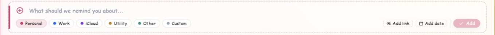
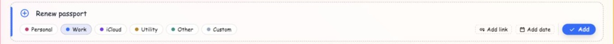
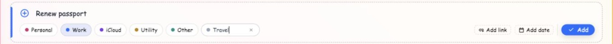
Add a when only when a when helps.
A reminder can remain undated forever. When timing matters, choose a date and start time.
Start and end selectors offer every minute of the day.
Removing the date also clears both times.
Add a date and time range添加日期与时间段
A date is optional. Time becomes available only after a date has been selected.日期为可选项；只有先选择日期，时间控件才会启用。
- Select Add date on the composer or an existing card.在新建输入区或已有卡片上点击「添加日期」。
- Choose a day. The popover stays open so you can continue with time.选择日期；弹出层会保持打开，以便继续设置时间。
- Choose a start minute. Reminder proposes an end exactly one hour later.选择开始时间（精确到分钟）；系统会建议一小时后的结束时间。
- Keep the proposal or choose any end at or after the start.保留建议，或选择不早于开始时间的其他结束时间。
Triggers联动结果 Dated reminders affect the seven-day Due soon count. Timed reminders also appear read-only in Today. 有日期的提醒会影响未来七天的「即将到期」数量；有时间段的提醒还会以只读方式出现在「今日」。
Result结果Removes start and end together but keeps the date.同时移除开始与结束时间，但保留日期。
Result结果Also clears both times. If a write fails, the previous saved values return and an error appears.也会清除两个时间；若写入失败，页面会恢复原已保存值并显示错误。
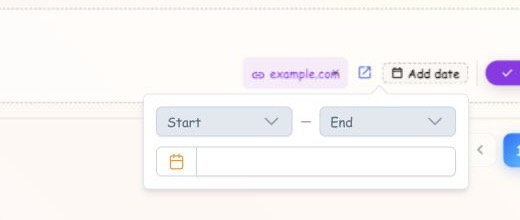
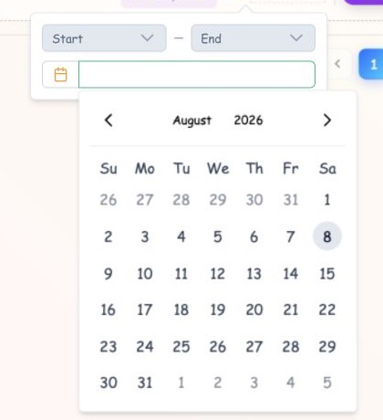
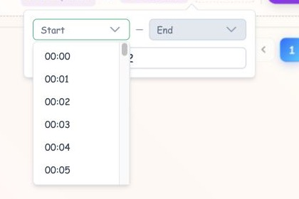
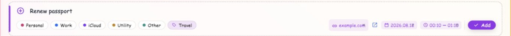
Use the fast path or the full path deliberately.
Reminder has two creation routes. They are intentionally different.
Choose the correct save path选择正确的保存方式
Enter and Add do not save the same fields.回车与「添加」保存的字段并不相同。
- Enter the text and choose a category.输入文字并选择分类。
- Press Enter in the text field.在文字输入框中按回车。
Only text and category are saved. Any date, time, link, or sharing choice still visible in the composer is intentionally skipped.只保存文字与分类；输入区中仍显示的日期、时间、链接或共享选择会被有意忽略。
- Review every visible chip and the sharing state.检查所有可见胶囊和共享状态。
- Select Add and wait while the button shows Adding.点击「添加」，并等待按钮显示「添加中」。
Text, category, date, time, normalized link, and supported sharing choice are saved together.文字、分类、日期、时间、规范化链接以及受支持的共享选择会一起保存。
Avoid accidental data loss避免遗漏信息 If you entered any optional detail, use Add—not Enter. If saving fails, the composer stays available and an error dialog lets you retry. 如果填写了任何可选细节，请使用「添加」而不是回车。保存失败时输入区仍可继续处理，错误对话框会提示重试。
Press Enter
Creates a text-and-category reminder immediately.
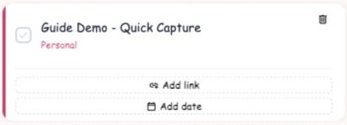
Press Add
Creates the reminder with all optional details.
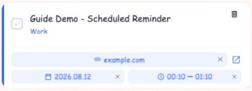
Change the reminder where you already see it.
There is no separate edit screen. Every editable value remains on the card.
Edit every field on the card直接在卡片上编辑所有字段
Changes save immediately; there is no separate edit form or Save button.修改会直接保存；没有独立编辑页面或「保存」按钮。
Feedback反馈 The small spinner beside the page title flashes during saves. Shared-card changes also enter the connected activity feed. 保存时页面标题旁会短暂显示小型转圈；共享卡片的修改也会进入关联账户的动态记录。
Behavior表现Blank input cancels. A duplicate shows a message instead of creating another category.空白输入会取消；重复名称会显示提示，不会创建第二个分类。
Fix处理Only the owner or a currently authorized connected member can edit. Reconnect or use the owning account.只有所有者或当前获授权的关联成员可编辑；请重新建立关联，或使用所属账户。
Recovery恢复The last saved value is restored and an error dialog appears; close it and retry after the connection recovers.页面会恢复上次已保存值并显示错误对话框；网络恢复后关闭对话框并重试。
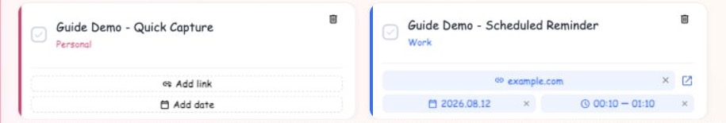
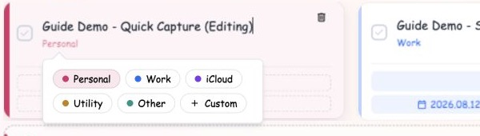
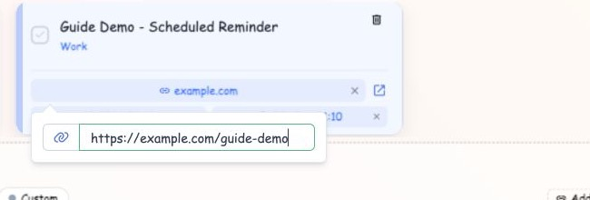
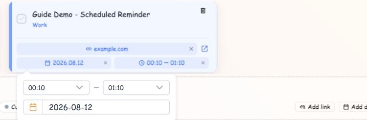
A finished reminder leaves the grid, but its work is counted.
Select the round check control and confirm the action.
Complete and count finished work完成并计入已完成数量
Use this only when the task actually happened. Completion permanently removes the open card.仅在事项确实完成时使用；完成操作会永久移除未完成卡片。
- Select the round check control at the left of the card.点击卡片左侧的圆形勾选控件。
- Read the confirmation dialog. Cancel leaves the reminder unchanged.阅读确认对话框；点击取消不会改变提醒。
- Confirm and wait for the blocking operation to finish.确认操作，并等待阻塞式写入完成。
Result结果 A private card increments your private completed count. A shared card is removed for linked members and increments the shared completion count. 私人卡片会增加你的私人完成数；共享卡片会从关联成员处移除，并增加共享完成数。
Permanent action永久操作 Completion is not an archive and has no restore control. If the write fails, an error is shown and the operation is not presented as complete. 完成不是归档，也没有恢复控件；写入失败时会显示错误，并且不会把操作呈现为已完成。
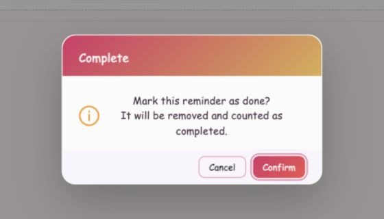
Increments your private completed count.
Increments the shared completed count.
Narrow the grid without losing the larger picture.
Category filters use OR logic. Select All to clear category and shared filters.
Filter the grid筛选卡片网格
Filters change what is visible, not what is stored.筛选只改变可见内容，不会改变已保存数据。
- Select one category to show its cards.选择一个分类以显示对应卡片。
- Select more categories to use OR logic: cards matching any selected category remain.继续选择其他分类时使用「或」逻辑：匹配任意已选分类的卡片都会保留。
- Select a category again to remove it, or choose All to reset everything.再次点击某分类即可取消，或点击「全部」重置所有筛选。
Secondary effects次要影响 Changing a filter returns to page 1. Category filters clear Shared mode, and the composer is hidden while a category filter is active. 改变筛选会回到第 1 页；分类筛选会关闭「共享」模式，并在启用期间隐藏新建输入区。
Create and work with shared reminders创建与处理共享提醒
Sharing is available only to supported CloudBase accounts with at least one active connected member.共享仅对拥有至少一个有效关联成员的 CloudBase 账户开放。
- Connect the accounts from Account first.先在「账户」页面建立账户关联。
- In the Reminder composer, turn on Share and finish with Add.在提醒输入区打开「共享」，并使用「添加」完成创建。
- Use the Shared filter when it appears to isolate shared cards.「共享」筛选出现后，可用它只查看共享卡片。
Result结果 Connected members see live shared cards. Incoming cards show their creator; edits, completion, and removal are rechecked by the server. 关联成员会看到实时共享卡片；收到的卡片会显示创建者，编辑、完成和删除均会由服务器再次校验。
Fix处理Finish or restore the account connection first.先完成或恢复账户关联。
Reason原因Connected Accounts and cross-account sharing are unavailable for this backend.该后端不支持关联账户与跨账户共享。
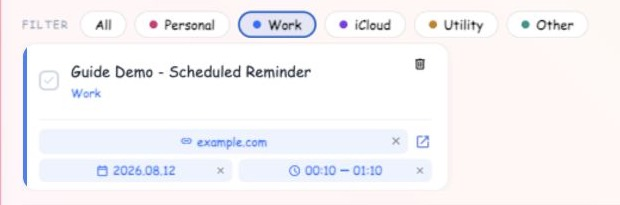
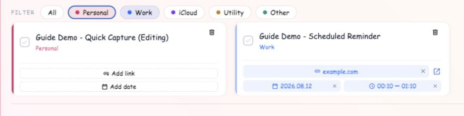
Delete only when the reminder should leave without credit.
Use the bin in the card header, then confirm.
Remove without completion credit删除但不计入完成
Use Delete for mistakes, duplicates, or work that is no longer needed—not for finished work.删除适用于错误、重复或不再需要的事项，不适用于已完成事项。
- Select the bin in the card header.点击卡片标题区域中的垃圾桶。
- Read the confirmation dialog and verify the intended card.阅读确认对话框，并确认是要删除的卡片。
- Confirm to remove it, or Cancel to return unchanged.确认后移除；点击取消则原样返回。
Result结果 The card disappears permanently and no completed counter changes. Shared removal is propagated to authorized linked members. 卡片会永久消失，任何完成计数都不会改变；共享删除会同步给获授权的关联成员。
No undo无法撤销 If you only want to remove a date, time, or link, use that chip’s close icon instead of deleting the card. 如果只想移除日期、时间或链接，请使用对应胶囊的关闭图标，不要删除整张卡片。
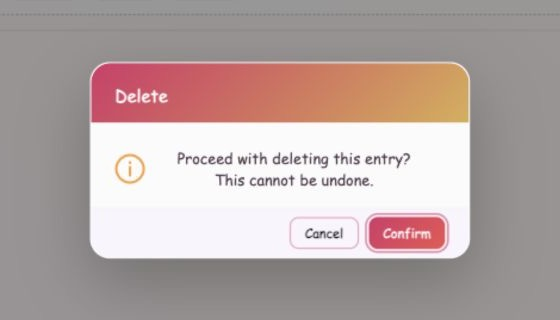
The task happened. Count the completion.
The task should disappear without credit.
Small rules worth remembering
These details explain the page when it behaves differently from a basic to-do list.
Understand loading, empty, and protected states理解载入、空白与受保护状态
The page changes its available controls according to session and data state.页面会根据会话与数据状态改变可用控件。
Read counts, pagination, and cross-page effects理解计数、分页与跨页面联动
These indicators explain what the page has done after your action.这些指标用于确认操作后的页面结果。
Recover from errors safely安全处理错误
Do not repeat a destructive action until the dialog or loading overlay has resolved.在对话框或载入遮罩结束前，不要重复执行破坏性操作。
Recovery恢复Check the network/session, close the timeout message, and reload or revisit Reminder.检查网络与会话，关闭超时提示后重新载入或再次进入提醒页。
Recovery恢复The Adding lock is released. Keep or re-enter the intended details, then retry once connectivity returns.「添加中」锁定会解除；保留或重新输入目标细节，网络恢复后再试。
Recovery恢复The previous saved value is restored. Reapply the edit only after resolving the reported connection or permission problem.页面会恢复之前已保存值；请先解决提示的网络或权限问题，再重新修改。
Recovery恢复Use the owning account or restore the supported connected-account relationship. Repeated clicks cannot bypass server checks.使用所属账户，或恢复受支持的账户关联；重复点击无法绕过服务器校验。
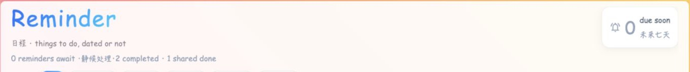
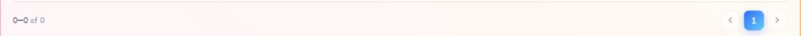
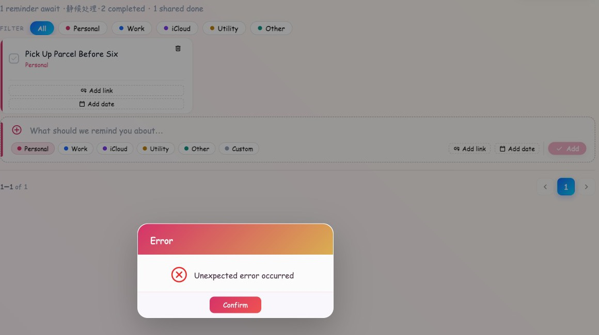
Counts dated reminders from today through seven days ahead.
Timed reminders appear in the Today planner.
Saved links are normalized and displayed by host name.
Page size follows the visible column count.
Clear filters when the composer is not visible.
Only an owner or authorized administrator can change a reminder.
Skeleton cards hold the layout while data loads.
An empty account keeps the composer ready.
Failed edits restore the previous value and release saving controls.
Sharing appears only for supported connected accounts.